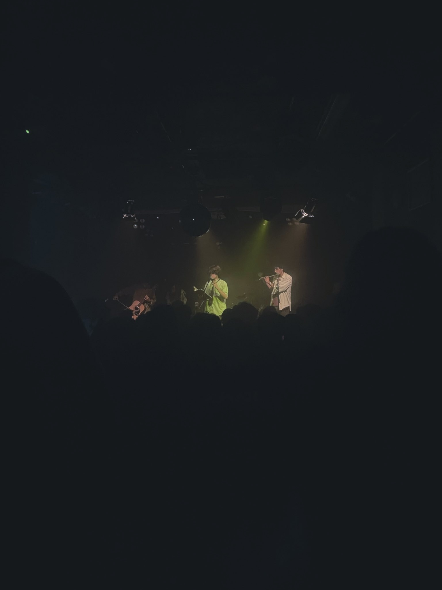
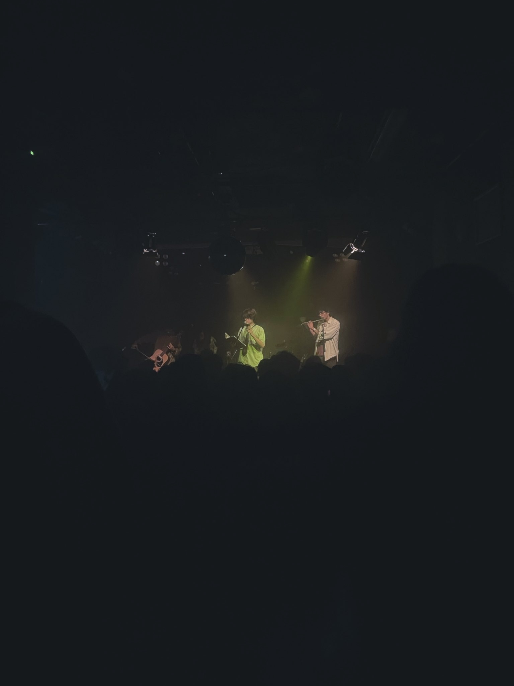
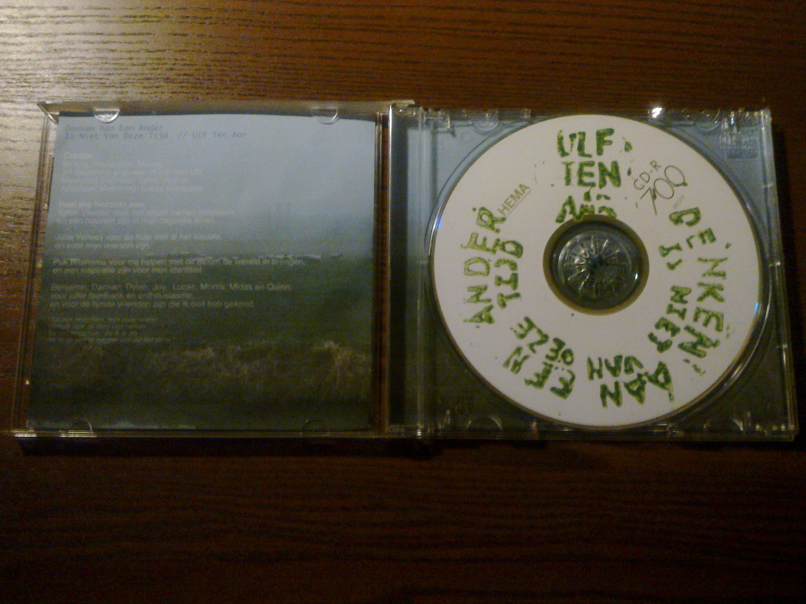
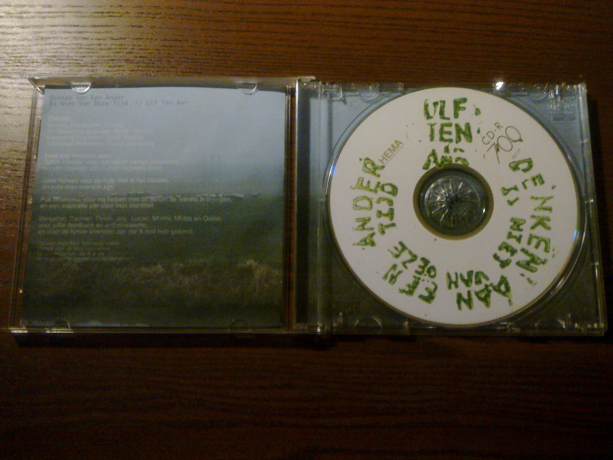

Ik begon met een stukje dat ik helemaal alleen deed, en dat vond ik best wel spannend, maar dat ging heel goed en zelfs daar was het muisstil in de zaal. Ik droeg zelfs nog een gedichtje voor, genaamd legopoppetje, en zelfs bij alleen mijn woorden was het muisstil. wat een eer en genot. Vanaf daar kwamen er steeds meer vriendjes van mij het podium op, en speelden we achter elkaar nog een flinke selectie liedjes, waaronder veel nog niet eerder vertoond materiaal, en eindigden we met nu is alles dat je hebt.
Daarna eindigde het introspectieve deel, en mocht het publiek lekker dansen over een liedje over muggen. En daar had iedereen, zeker ik, ook echt behoefte aan. We sloten de set af met "de wereld draait", en ik kan me geen beter einde verzinnen van de set.
Ik was hiervoor de hele maand in mijn hoofd bezig hiermee, elke overgang had ik precies uitgedacht, en het was heel erg cool dat het precies zo werkte als dat ik had gehoopt. Ik had er ook niet perse zin in, ik houd zelf niet zo van in de spotlight staan denk ik, en dat is soms nog wel een beetje wennen. Normaal gesproken als ik een liedje speel voor mensen dan doe ik alsof ik lekker veilig in mijn kamer zit, maar deze keer was het eigenlijk wel prima dat er zo veel ogen en oren op mij gericht waren. Ik genoot er zelfs een beetje van. Dus nu weet ik zeker dat ik het leuk vind
De reacties van mensen achteraf waren heel bijzonder. Ik heb veel gehoord van mensen dat ze moesten huilen om mijn liedjes en ook om van mensen terug te horen dat ze henzelf konden herkennen in legopoppetje was heel erg bijzonder. Deze keer stond ik veilig achter mijn tafel die ik had gevuld met merch, en dat was wel ook heel erg fijn, Mensen kwamen lekker langs. en al die positieve reacties motiveren me nu ook heel erg om verder te werken aan mijn albums. Dikke love aan iedereen die er was, het was sowieso mijn fijnste optreden ooit, en ik ben nu wel heel erg enthousiast om meer te spelen.
Het was ook heel erg leuk dat weer wat mensen mijn silly ulf ten aar blousjes kochten en die ook meteen gingen dragen.
Heel erg bedankt aan ACU voor de zaal waar het kon, de vrijwilligers die die avond en die hele plek draaiende houden, harold die die hele avond had geregeld, en Ulf Ten Aar had geboekt, Slàbak en Cage.Log - de twee andere bands die die avond legendarisch hebben gemaakt, Mlem Records voor een platform geven voor mijn muziek en leuke mensen zijn, het publiek voor goed luisteren en de mooie positeve reacties, maar het meest bedankt aan de UTA band: Damian, Dylan, Lucas, Midas en Sytse - voor het vrijmaken van hun kostbare tijd en samen mijn liedjes tot leven te wekken. Ik hoop dat we dat nog vaak gaan doen.$
Ook nog bedankt aan Dylan Hokstam voor het opnemen van de show met een zoom recorder, die opname kan je hieronder luisteren.
 

ik heb cd'tjes gemaakt hoe vet
BOEMMM:
Afgelopen week tijdens ons eerste had ik voor het eerst mijn CD's verkocht. Ze zijn geheel zelfgefrabriceerd en zelf ontworpen (Uiteraard wel met feedback van Julia Verweij) Om het halfjarige bestaan (ongeveer) van DAEAINVDT te vierenOmdat ik linkse wappie ben ben ik alle kringlopen afgestruind om CD's te zoeken, wat vaak nog wel mogelijk was, maar CD's met hoesjes waren toch net wat pittiger.
dan kan ik maar een ding zeggen
en dat is nee,, Vinyl is veel minder chill voor de vuilnisbelten in afrika waar dit poepalbum ooit op een dag toch terecht terecht gaat komen en kosten ook nog eens heel veel geld omdat ze in kleine oplage gewoon niet te betalen zijn snapje,, dus daarom niet 
Muzikaal gezien wilde ik een nummer maken waar je lekker kunt wegdromen en kunt zitten met je verdriet.
Laatste tijd voel ik me weer wat beter verbonden met mijn gitaartje en durf ik ook daarop weer wat te schrijven. Dat is fijn en ik gebruik bij dit liedje een gekke tuning en dat inspireerde. Ik ging zitten op mijn kussen en alles klopte even. Ik hoop dit verder uit te werken.
Het idee van de tekst kwam me op de fiets bij (zoals altijd) toen ik aan het genieten was van de mooie dag, en toen besefte dat het op veel plekken in de wereld, congo, sudan, xinjiang, gaza, en nog veel meer plekken helemaal geen mooie dag is.
De poetische teksten, muzikaal uiteenlopende nummers, bijzondere ritmes en de toeters, maken dat de kift heel tof is voor mij. Ik waardeer heel erg dat ze heel veel zelf doen, en er zijn leuke interviews te vinden online heh
Favoriete nummers: Hoofdkaas, eeuwige bewonderaar, knoeck.
Het is een fijn lied om op te zetten als je aan het fietsen bent, dat heb ik uitvoerig getest.
Snelle Fietser is nu overal te beluisteren. De videoclip volgt snel.Het is een heel fijn en rustig nummertje dat gaat over dissasociatie en over je niet jezelf voelen.
meer informatie volgt...